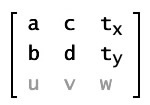
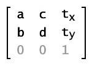
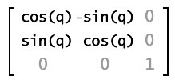
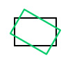
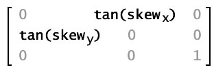
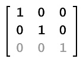
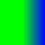

| window.runtime property | window.runtime.flash.geom.Matrix |
| Inheritance | Matrix |
| Runtime Versions: | AIR 1.0, |
matrix property of a Transform object,
and then applying that Transform object as the transform property of the display object.
These transformation functions include translation
(x and y repositioning), rotation, scaling, and skewing.
Together these types of transformations are known as affine transformations. Affine transformations preserve the straightness of lines while transforming, so that parallel lines stay parallel.
To apply a transformation matrix to a display object, you create a Transform
object, set its matrix property to the transformation matrix, and then set the transform
property of the display object to the Transform object.
Matrix objects are also used as parameters of some methods, such as the following:
- The
draw()method of a BitmapData object - The
beginBitmapFill()method,beginGradientFill()method, orlineGradientStyle()method of a Graphics object
A transformation matrix object is a 3 x 3 matrix with the following contents:

In traditional transformation matrixes, the u, v, and w
properties provide extra capabilities.
The Matrix class can only operate in two-dimensional space, so it always
assumes that the property values u and v are 0.0, and that the property value
w is 1.0. The effective values of the matrix are as follows:

You can get and set the values of all six of the other properties in a Matrix
object: a, b, c,
d, tx, and ty.
The Matrix class supports the four major types of transformations: translation, scaling, rotation, and skewing. You can set three of these transformations by using specialized methods, as described in the following table:
| Transformation | Method | Matrix values | Display result | Description |
|---|---|---|---|---|
| Translation (displacement) |
translate(tx, ty)
|

|

| Moves the image tx pixels to the right and ty pixels
down. |
| Scaling |
scale(sx, sy)
|

|

| Resizes the image, multiplying the location of each pixel by sx on the
x axis and sy on the y axis. |
| Rotation |
rotate(q)
|  |  | Rotates the image by an angle q, which is measured in radians. |
| Skewing or shearing | None; must set the properties b and c
|  |

| Progressively slides the image in a direction parallel to the x or y axis. The b
property of the Matrix object represents the tangent of the skew angle along the y axis;
the c property of the Matrix object represents the tangent of the skew angle along the
x axis. |
Each transformation function alters the current matrix properties so that
you can effectively combine multiple transformations. To do this, you call more than one
transformation function before applying the matrix to its display object target (by using the
transform property of that display object).
Use the new Matrix() constructor to create a
Matrix object before you can call the methods of the Matrix object.
See also
 Hide Inherited Public Properties
Hide Inherited Public Properties Show Inherited Properties
Show Inherited Properties| Property | Defined By | ||
|---|---|---|---|
| a : Number
The value that affects the positioning of pixels
along the x axis when scaling or rotating an image. | Matrix | ||
| b : Number
The value that affects the positioning of pixels
along the y axis when rotating or skewing an image. | Matrix | ||
| c : Number
The value that affects the positioning of pixels
along the x axis when rotating or skewing an image. | Matrix | ||
 | constructor : Object
A reference to the class object or constructor function for a given object instance. | Object | |
| d : Number
The value that affects the positioning of pixels
along the y axis when scaling or rotating an image. | Matrix | ||
| prototype : Object [static]
A reference to the prototype object of a class or function object. | Object | |
| tx : Number
The distance by which to translate each point along the x axis. | Matrix | ||
| ty : Number
The distance by which to translate each point along the y axis. | Matrix | ||
| Method | Defined By | ||
|---|---|---|---|
Matrix(a:Number = 1, b:Number = 0, c:Number = 0, d:Number = 1, tx:Number = 0, ty:Number = 0)
Creates a new Matrix object with the specified parameters. | Matrix | ||
Returns a new Matrix object that is a clone of this
matrix, with an exact copy of the contained object. | Matrix | ||
Concatenates a matrix with the current matrix, effectively combining the
geometric effects of the two. | Matrix | ||
copyColumnFrom(column:uint, vector3D:Vector3D):void
Copies a Vector3D object into specific column of the calling Matrix3D object. | Matrix | ||
copyColumnTo(column:uint, vector3D:Vector3D):void
Copies specific column of the calling Matrix object into the Vector3D object. | Matrix | ||
Copies all of the matrix data from the source Point object into the
calling Matrix object. | Matrix | ||
copyRowFrom(row:uint, vector3D:Vector3D):void
Copies a Vector3D object into specific row of the calling Matrix object. | Matrix | ||
copyRowTo(row:uint, vector3D:Vector3D):void
Copies specific row of the calling Matrix object into the Vector3D object. | Matrix | ||
createBox(scaleX:Number, scaleY:Number, rotation:Number = 0, tx:Number = 0, ty:Number = 0):void
Includes parameters for scaling,
rotation, and translation. | Matrix | ||
createGradientBox(width:Number, height:Number, rotation:Number = 0, tx:Number = 0, ty:Number = 0):void
Creates the specific style of matrix expected by the beginGradientFill() and
lineGradientStyle() methods of the Graphics class. | Matrix | ||
Given a point in the pretransform coordinate space, returns the coordinates of
that point after the transformation occurs. | Matrix | ||
| hasOwnProperty(name:String):Boolean
Indicates whether an object has a specified property defined. | Object | |
identity():void
Sets each matrix property to a value that causes a null transformation. | Matrix | ||
invert():void
Performs the opposite transformation
of the original matrix. | Matrix | ||
| isPrototypeOf(theClass:Object):Boolean
Indicates whether an instance of the Object class is in the prototype chain of the object specified
as the parameter. | Object | |
| propertyIsEnumerable(name:String):Boolean
Indicates whether the specified property exists and is enumerable. | Object | |
rotate(angle:Number):void
Applies a rotation transformation to the Matrix object. | Matrix | ||
scale(sx:Number, sy:Number):void
Applies a scaling transformation to the matrix. | Matrix | ||
| setPropertyIsEnumerable(name:String, isEnum:Boolean = true):void
Sets the availability of a dynamic property for loop operations. | Object | |
setTo(aa:Number, ba:Number, ca:Number, da:Number, txa:Number, tya:Number):void
Sets the members of Matrix to the specified values
| Matrix | ||
| toLocaleString():String
Returns the string representation of this object, formatted according to locale-specific conventions. | Object | |
toString():String
Returns a text value listing the properties of the Matrix object. | Matrix | ||
Returns the result of applying the geometric transformation represented by the Matrix object to the
specified point. | Matrix | ||
translate(dx:Number, dy:Number):void
Translates the matrix along the x and y axes, as specified by the dx
and dy parameters. | Matrix | ||
| valueOf():Object
Returns the primitive value of the specified object. | Object | |
a | property |
public var a:Number| Runtime Versions: | AIR 1.0, |
The value that affects the positioning of pixels along the x axis when scaling or rotating an image.
Example ( How to use this example )
myMatrix and sets its
a value.
var myMatrix = new air.Matrix(); air.trace(myMatrix.a); // 1 myMatrix.a = 2; air.trace(myMatrix.a); // 2
b | property |
public var b:Number| Runtime Versions: | AIR 1.0, |
The value that affects the positioning of pixels along the y axis when rotating or skewing an image.
Example ( How to use this example )
myMatrix and sets its
b value.
var myMatrix = new air.Matrix(); air.trace(myMatrix.b); // 0 var degrees = 30; var radians = (degrees/180) * Math.PI; myMatrix.b = Math.tan(radians); air.trace(myMatrix.b); // 0.5773502691896257
c | property |
public var c:Number| Runtime Versions: | AIR 1.0, |
The value that affects the positioning of pixels along the x axis when rotating or skewing an image.
Example ( How to use this example )
myMatrix and sets its
c value.
var myMatrix = new air.Matrix(); air.trace(myMatrix.c); // 0 var degrees = 30; var radians = (degrees/180) * Math.PI; myMatrix.c = Math.tan(radians); air.trace(myMatrix.c); // 0.5773502691896257
d | property |
public var d:Number| Runtime Versions: | AIR 1.0, |
The value that affects the positioning of pixels along the y axis when scaling or rotating an image.
Example ( How to use this example )
myMatrix and sets its
d value.
var myMatrix = new air.Matrix(); air.trace(myMatrix.d); // 1 myMatrix.d = 2; air.trace(myMatrix.d); // 2
tx | property |
public var tx:Number| Runtime Versions: | AIR 1.0, |
The distance by which to translate each point along the x axis.
Example ( How to use this example )
myMatrix and sets its
tx value.
var myMatrix = new air.Matrix(); air.trace(myMatrix.tx); // 0 myMatrix.tx = 50; // 50 air.trace(myMatrix.tx);
ty | property |
public var ty:Number| Runtime Versions: | AIR 1.0, |
The distance by which to translate each point along the y axis.
Example ( How to use this example )
myMatrix and sets its
ty value.
var myMatrix = new air.Matrix(); air.trace(myMatrix.ty); // 0 myMatrix.ty = 50; air.trace(myMatrix.ty); // 50
Matrix | () | Constructor |
public function Matrix(a:Number = 1, b:Number = 0, c:Number = 0, d:Number = 1, tx:Number = 0, ty:Number = 0)| Runtime Versions: | AIR 1.0, |
Creates a new Matrix object with the specified parameters. In matrix notation, the properties are organized like this:
If you do not provide any parameters to the new Matrix() constructor, it creates an
identity matrix with the following values:
In matrix notation, the identity matrix looks like this:

Parametersa:Number (default = 1) | |
b:Number (default = 0) | |
c:Number (default = 0) | |
d:Number (default = 1) | |
tx:Number (default = 0) | |
ty:Number (default = 0) |
Example ( How to use this example )
matrix_1 by sending no parameters to the
Matrix() constructor and matrix_2 by sending parameters to it. Notice that
matrix_1, which was created with no parameters, results in an identity matrix with the values
a=1, b=0, c=0, d=1, tx=0,
ty=0.
var matrix_1 = new air.Matrix(); air.trace(matrix_1); // (a=1, b=0, c=0, d=1, tx=0, ty=0) var matrix_2 = new air.Matrix(1, 2, 3, 4, 5, 6); air.trace(matrix_2); // (a=1, b=2, c=3, d=4, tx=5, ty=6)
clone | () | method |
concat | () | method |
public function concat(m:Matrix):void| Runtime Versions: | AIR 1.0, |
Concatenates a matrix with the current matrix, effectively combining the geometric effects of the two. In mathematical terms, concatenating two matrixes is the same as combining them using matrix multiplication.
For example, if matrix m1 scales an object by a factor of four, and
matrix m2 rotates an object by 1.5707963267949 radians
(Math.PI/2), then m1.concat(m2) transforms m1
into a matrix that scales an object by a factor of four and rotates the object by
Math.PI/2 radians.
This method replaces the source matrix with the concatenated matrix. If you
want to concatenate two matrixes without altering either of the two source matrixes,
first copy the source matrix by using the clone() method, as shown in the Class Examples section.
Parameters
m:Matrix — The matrix to be concatenated to the source matrix.
|
copyColumnFrom | () | method |
public function copyColumnFrom(column:uint, vector3D:Vector3D):void| Runtime Versions: | 3.0 |
Copies a Vector3D object into specific column of the calling Matrix3D object.
Parameters
column:uint — The column from which to copy the data from.
| |
vector3D:Vector3D — The Vector3D object from which to copy the data.
|
copyColumnTo | () | method |
public function copyColumnTo(column:uint, vector3D:Vector3D):void| Runtime Versions: | 3.0 |
Copies specific column of the calling Matrix object into the Vector3D object. The w element of the Vector3D object will not be changed.
Parameters
column:uint — The column from which to copy the data from.
| |
vector3D:Vector3D — The Vector3D object from which to copy the data.
|
copyFrom | () | method |
copyRowFrom | () | method |
public function copyRowFrom(row:uint, vector3D:Vector3D):void| Runtime Versions: | 3.0 |
Copies a Vector3D object into specific row of the calling Matrix object.
Parameters
row:uint — The row from which to copy the data from.
| |
vector3D:Vector3D — The Vector3D object from which to copy the data.
|
copyRowTo | () | method |
public function copyRowTo(row:uint, vector3D:Vector3D):void| Runtime Versions: | 3.0 |
Copies specific row of the calling Matrix object into the Vector3D object. The w element of the Vector3D object will not be changed.
Parameters
row:uint — The row from which to copy the data from.
| |
vector3D:Vector3D — The Vector3D object from which to copy the data.
|
createBox | () | method |
public function createBox(scaleX:Number, scaleY:Number, rotation:Number = 0, tx:Number = 0, ty:Number = 0):void| Runtime Versions: | AIR 1.0, |
Includes parameters for scaling, rotation, and translation. When applied to a matrix it sets the matrix's values based on those parameters.
Using the createBox() method lets you obtain the same matrix as you would if
you applied the identity(), rotate(), scale(), and translate() methods
in succession. For example, mat1.createBox(2,2,Math.PI/4, 100, 100) has the
same effect as the following:
var mat1 = new air.Matrix();
mat1.identity();
mat1.rotate(Math.PI/4);
mat1.scale(2, 2);
mat1.translate(10, 20);
Parameters
scaleX:Number — The factor by which to scale horizontally.
| |
scaleY:Number — The factor by which scale vertically.
| |
rotation:Number (default = 0) | |
tx:Number (default = 0) | |
ty:Number (default = 0) |
createGradientBox | () | method |
public function createGradientBox(width:Number, height:Number, rotation:Number = 0, tx:Number = 0, ty:Number = 0):void| Runtime Versions: | AIR 1.0, |
Creates the specific style of matrix expected by the beginGradientFill() and
lineGradientStyle() methods of the Graphics class. Width and height are scaled to
a scaleX/scaleY pair and the tx/ty
values are offset by half the width and height.
For example, consider a gradient with the following characteristics:
GradientType.LINEAR- Two colors, green and blue, with the ratios array set to
[0, 255] SpreadMethod.PADInterpolationMethod.LINEAR_RGB
The following illustrations show gradients in which the matrix was defined using the
createGradientBox() method with different parameter settings:
createGradientBox() settings | Resulting gradient |
|---|---|
width = 25;
height = 25;
rotation = 0;
tx = 0;
ty = 0; |  |
width = 25;
height = 25;
rotation = 0;
tx = 25;
ty = 0; |  |
width = 50;
height = 50;
rotation = 0;
tx = 0;
ty = 0; |  |
width = 50;
height = 50;
rotation = Math.PI / 4; // 45 degrees
tx = 0;
ty = 0; |
Parameters
width:Number — The width of the gradient box.
| |
height:Number — The height of the gradient box.
| |
rotation:Number (default = 0) | |
tx:Number (default = 0)width parameter.
| |
ty:Number (default = 0)height parameter.
|
deltaTransformPoint | () | method |
public function deltaTransformPoint(point:Point):Point| Runtime Versions: | AIR 1.0, |
Given a point in the pretransform coordinate space, returns the coordinates of
that point after the transformation occurs. Unlike the standard transformation applied using
the transformPoint() method, the deltaTransformPoint() method's
transformation does not consider the translation parameters tx and ty.
Parameters
point:Point — The point for which you want to get the result of the matrix transformation.
|
Point — The point resulting from applying the matrix transformation.
|
identity | () | method |
public function identity():void| Runtime Versions: | AIR 1.0, |
Sets each matrix property to a value that causes a null transformation. An object transformed by applying an identity matrix will be identical to the original.
After calling the identity() method, the resulting matrix has the following properties:
a=1, b=0, c=0, d=1, tx=0, ty=0.
In matrix notation, the identity matrix looks like this:
invert | () | method |
public function invert():void| Runtime Versions: | AIR 1.0, |
Performs the opposite transformation of the original matrix. You can apply an inverted matrix to an object to undo the transformation performed when applying the original matrix.
rotate | () | method |
public function rotate(angle:Number):void| Runtime Versions: | AIR 1.0, |
Applies a rotation transformation to the Matrix object.
The rotate() method alters the a, b, c,
and d properties of the Matrix object.
In matrix notation, this is the same as concatenating the current matrix with the following:
Parameters
angle:Number — The rotation angle in radians.
|
scale | () | method |
public function scale(sx:Number, sy:Number):void| Runtime Versions: | AIR 1.0, |
Applies a scaling transformation to the matrix. The x axis is multiplied
by sx, and the y axis it is multiplied by sy.
The scale() method alters the a and d properties of
the Matrix object.
In matrix notation, this is the same as concatenating the current matrix with the following matrix:
Parameters
sx:Number — A multiplier used to scale the object along the x axis.
| |
sy:Number — A multiplier used to scale the object along the y axis.
|
setTo | () | method |
public function setTo(aa:Number, ba:Number, ca:Number, da:Number, txa:Number, tya:Number):void| Runtime Versions: | 3.0 |
Sets the members of Matrix to the specified values
Parameters
aa:Number — the values to set the matrix to.
| |
ba:Number | |
ca:Number | |
da:Number | |
txa:Number | |
tya:Number |
toString | () | method |
public function toString():String| Runtime Versions: | AIR 1.0, |
Returns a text value listing the properties of the Matrix object.
ReturnsString — A string containing the values of the properties of the Matrix object: a, b, c,
d, tx, and ty.
|
transformPoint | () | method |
public function transformPoint(point:Point):Point| Runtime Versions: | AIR 1.0, |
Returns the result of applying the geometric transformation represented by the Matrix object to the specified point.
Parameters
point:Point — The point for which you want to get the result of the Matrix transformation.
|
Point — The point resulting from applying the Matrix transformation.
|
translate | () | method |
public function translate(dx:Number, dy:Number):void| Runtime Versions: | AIR 1.0, |
Translates the matrix along the x and y axes, as specified by the dx
and dy parameters.
Parameters
dx:Number — The amount of movement along the x axis to the right, in pixels.
| |
dy:Number — The amount of movement down along the y axis, in pixels.
|
Thu Sep 29 2011, 02:34 AM -07:00